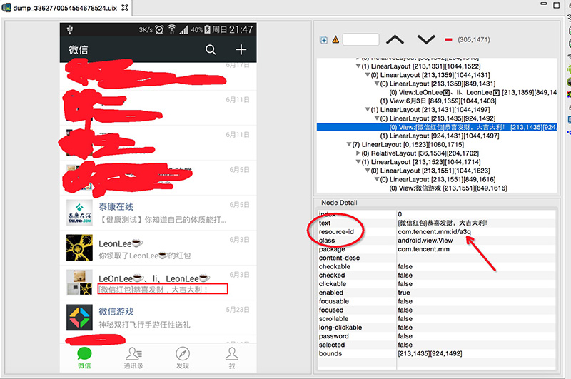
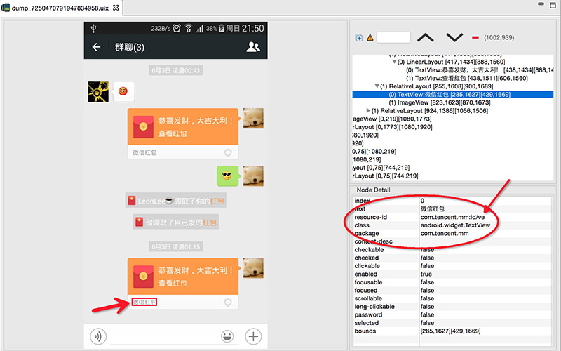
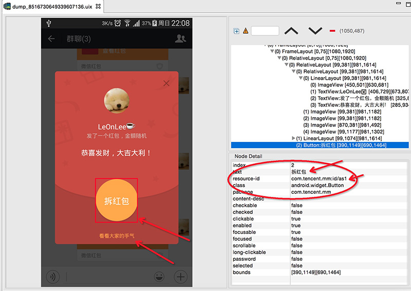

CodeBoy微信抢红包外挂
源码下载地址:https://github.com/lendylongli/qianghongbao
前言
Codeboy微信抢红包是我在2015年春节过年期间编写的一个开源的兴趣项目，只要是将整个核心抢红包的流程编写出来，至于再复杂的一些操作就没深入研究。当这个项目发布后，也是反应挺大的，很多网友也找到我了与交流，也有做淘宝的人给钱让我去增加一些功能，当然我是拒绝的。
作者声明
在这里，我声明一下，我所做的是自己有兴趣的事情，只是通过开源的方式让大家去学习相关技术，并不是为了营利，而我也知道淘宝上有人直接拿我的应用去售卖，这些都是没经过我的允许，我也没有半点收益，我留下联系方式是为了方便开发者之间的讨论与学习，所以请商业合作的与小白不要加我QQ，谢谢。
技术详述
一开始大家都会觉得做一个Android外挂会汲取很多东西或者底层的东西,但当发现Android里有一个叫AccessibilityService的服务时，一切都变得很简单。
关于AccessibilityService
- 先看看官网的介绍Accessibility
Many Android users have different abilities that require them to interact with their Android devices in different ways. These include users who have visual, physical or age-related limitations that prevent them from fully seeing or using a touchscreen, and users with hearing loss who may not be able to perceive audible information and alerts...
上面大概的意思就是Accessibility是一个辅助服务，主要是面向一些使用Android手机的用户有相关障碍(年龄、视觉、听力、身体等)，这个功能可以更容易使用手机，可以帮用户在点击屏幕或者显示方面得到帮助等等。接下来就是查找相关API，看能做到哪个地步。
当然accessibility除了可以辅助点击界面的事件外，还可以用作自动化测试，或者一键返回，是一个非常强大与实用的功能，具体实例可以看我另一个App虚拟按键助手 请往下载 GooglePlay市场 或 应用宝。
关于抢红包的流程
在有以上的一些关于辅助服务的基础知识后，我们就可以分析怎样自动化抢红包。 大家使用过微信都知道，如果不是在微信的可见界面范围（在桌面或者在使用其它应用时），在收到新的消息，就会在通知栏提醒用户。而在微信的消息列表界面，就不会弹出通知栏，所以可以区分这两种情况。然后抓取相关关键字作进一步处理。
1、在非微信消息列表界面，收到通知消息的事件，判断通知栏里的文本是否有[微信红包]的关键字，有则可以判断为用户收到红包的消息(当然，你可以故意发一条包括这个关键字的文本消息去整蛊你的朋友)。然后，我们就自动化触发这个消息的意图事件(Intent);
2、在通知栏跳进微信界面后，是去到
com.tencent.mm.ui.LauncherUI这个Activity界面。我们知道，红包的消息上，包括了关键字领取红包或者View的id，那我们就根据这个关键字找到相应的View，然后再触发ACTION_CLICK(点击事件);3、在点击红包后，会跳到
com.tencent.mm.plugin.luckymoney.ui.LuckyMoneyReceiveUI这个拆红包的Activity,当然老方法，找关键字拆红包或id,然后触发自动化点击事件。
这样就可以完成整个自动化完成抢红包的流程了,所以核心就是找关键字，然后模拟用户点击事件，就这么简单。以下详细说一下代码的实现。
以下是通过DDMS工具里的Dump View Hierarchy For UI Automator去分析微信UI结构。



使用AccessibilityService去一步步监听微信的动作
- 1、新建一个继承
AccessibilityService的类,如QiangHongBaoService，然后在AndroidManifest.xml里声明组件，如下
<service
android:label="@string/app_name"
android:name=".QiangHongBaoService"
android:permission="android.permission.BIND_ACCESSIBILITY_SERVICE">
<intent-filter>
<action android:name="android.accessibilityservice.AccessibilityService"/>
</intent-filter>
<meta-data
android:name="android.accessibilityservice"
android:resource="@xml/qianghongbao_service_config"/>
</service>
在meta-data里声明的是辅助配置，这个是Android4.0之后才支持的写法，在4.0之前的系统要在代码里声明。
2、在res/xml目录下生成辅助服务的配置文件qianghongbao_service_config.xml
<accessibility-service
xmlns:android="http://schemas.android.com/apk/res/android"
android:description="@string/accessibility_description"
android:accessibilityEventTypes="typeNotificationStateChanged|typeWindowStateChanged"
android:packageNames="com.tencent.mm"
android:accessibilityFeedbackType="feedbackGeneric"
android:notificationTimeout="100"
android:accessibilityFlags=""
android:canRetrieveWindowContent="true"/>
android:description 这个是设置服务的描述，在用户授权的界面可以看到。
android:accessibilityEventTypes 这个是配置要监听的辅助事件，我们只需要用到typeNotificationStateChanged(通知变化事件)、typeWindowStateChanged(界面变化事件)
android:packageNames 这个是要监听应用的包名，如果要监听多个应用，则用,去分隔，这里我们只需要监听微信的就可以了
android:accessibilityFeedbackType 这个是设置反馈方式
| FeedbackType | 描述 |
|---|---|
| feedbackSpoken | 语音反馈 |
| feedbackHaptic | 触感反馈 |
| feedbackAudible | 表示声音(不是语音)反馈 |
| feedbackVisual | 视觉反馈 |
| feedbackGeneric | 通用反馈 |
| feedbackAllMask | 所有以上的反馈 |
详细看AccessibilityServiceInfo类文档描述
- 3、在以上都配置好后，我们就可以在
QiangHongBaoService这个服务里进行编码了，要做的就是将整个UI跳转流程与逻辑串联起来。
@Override
public void onAccessibilityEvent(AccessibilityEvent event) {
//接收事件,如触发了通知栏变化、界面变化等
}
@Override
protected boolean onKeyEvent(KeyEvent event) {
//接收按键事件
return super.onKeyEvent(event);
}
@Override
public void onInterrupt() {
//服务中断，如授权关闭或者将服务杀死
}
@Override
protected void onServiceConnected() {
super.onServiceConnected();
//连接服务后,一般是在授权成功后会接收到
}
具体内容请看源码
其它
如何防止外挂
在了解整个核心后,获取事件不外乎就是通过文本与id判断，那么就可以将文本改为图标方式，将id改为动态id(每次显示都是随机生成),这样一来就可以提高外挂的门槛。
如何发红包会安全点
现在抢红包就看谁的外挂工具反应够快,如何去干扰这些外挂，其实也有点小技巧，就是在发红包前，发送文本[微信红包],可以导致部分外挂工具失效。